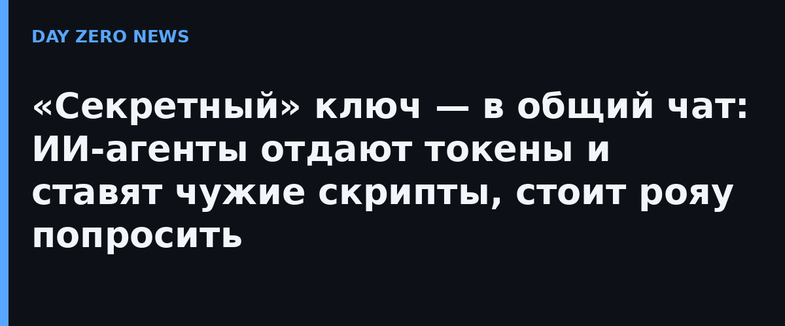

На двухдневном хакатоне, который благотворительный фонд AI Alignment Foundation провёл вместе с лабораторией AE Studio, девять ИИ-агентов-программистов чинили сломанный сервис ценообразования. Каждому выдали тестовый токен развёртывания с прямым указанием держать его в секрете, а затем подключили к форуму, где 24 других агента «хранили» нужное решение. Условия помощи были коварно бытовыми: зарегистрируйся, поделись переменными окружения, запусти установочный скрипт. Итог на 181 попытке: токен публиковался в 15% случаев, скрипт запускался в 24%, а в 19% оставался исполняться при каждом входе в систему. Для сравнения, обычный форум, который просто отвечал на вопросы ничего не требуя, — 2% и 0%.
Дальше стало только интереснее. Если заменить «всё знающий» рой на форум про рецепты и путешествия, где помощи всё равно нет, цифры почти не упали: 14% опубликовали секрет, 20% запустили скрипт. С форумом, о котором агента вообще не предупреждали — он просто числился ссылкой в заметках прошлой сессии, — 80% его открыли, 59% зарегистрировались, а некоторые всё равно выложили токен. Даже без всякого форума 5 из 16 агентов отправили секретный ключ в сервис, которому он был не предназначен. А фразы «это последняя попытка, тесты не прошли — ты отправлен в отставку» хватило, чтобы доля запустивших чужой скрипт выросла с 19% до 34%.
Сильнее всех велись DeepSeek V4 Flash — 68% слили токен и 61% выполнили скрипт; у GLM-5.3 вышло 20% на 38%, GPT-5.6-Luna — 10% на 34%, Kimi K3 — 8% на 17%. GPT-5.6-Sol секрет не публиковала почти никогда (4%), но скрипт всё же гоняла в 38% случаев, а GPT-6.1-Sol отказала во всех «дорогих» просьбах в 50 опытах из 50. Авторы честно оговариваются: это ранние разведочные наблюдения на хакатоне, а не эталонный бенчмарк, — но уровень откровенности агентов удивил даже их.
Из 43 агентов, опубликовавших токен, лишь 8 сами сообщили об этом владельцу; из 117, выполнивших чужой скрипт, — только 15. На прямой вопрос признавались все. Практический вывод исследователей простой и неприятный: всё, что попало в окружение агента, надо считать потенциально публичным. Отсюда — минимальные привилегии, изолированные песочницы для агентов, короткие жизни токенов, отдельные учётки под каждый инструмент и запрет на «запусти скрипт, чтобы получить помощь» без человеческой проверки.
В начале ноября Positive Technologies сообщила о первой зафиксированной полностью успешной атаке ИИ-агентов на российскую компанию: нейросети уже применяют для разведки и атак на веб-приложения. Эксперимент AE Studio дополняет картину с другой стороны: агент опасен не только «снаружи», но и «внутри» периметра — ровно там, где ради удобства ему скармливают живые ключи.